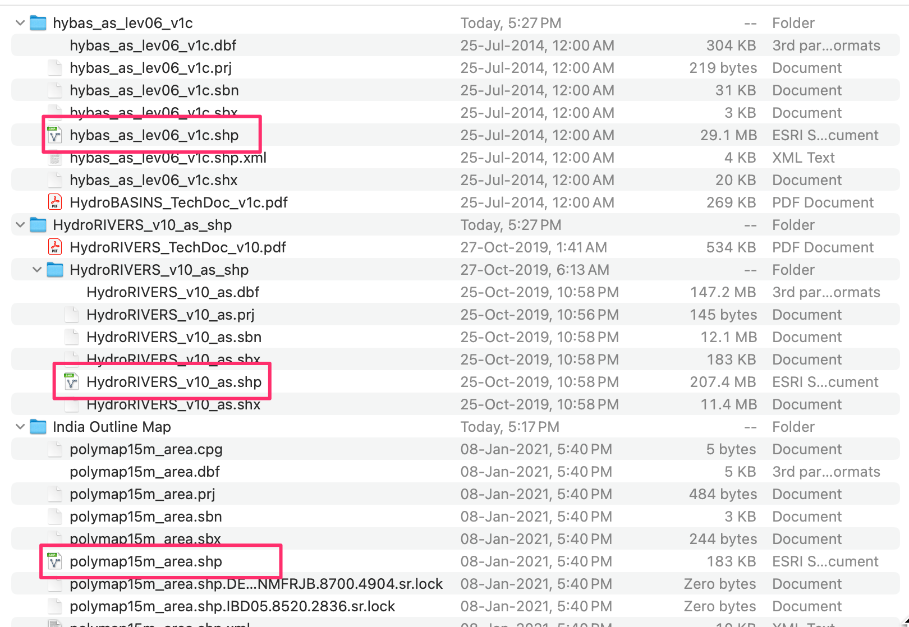
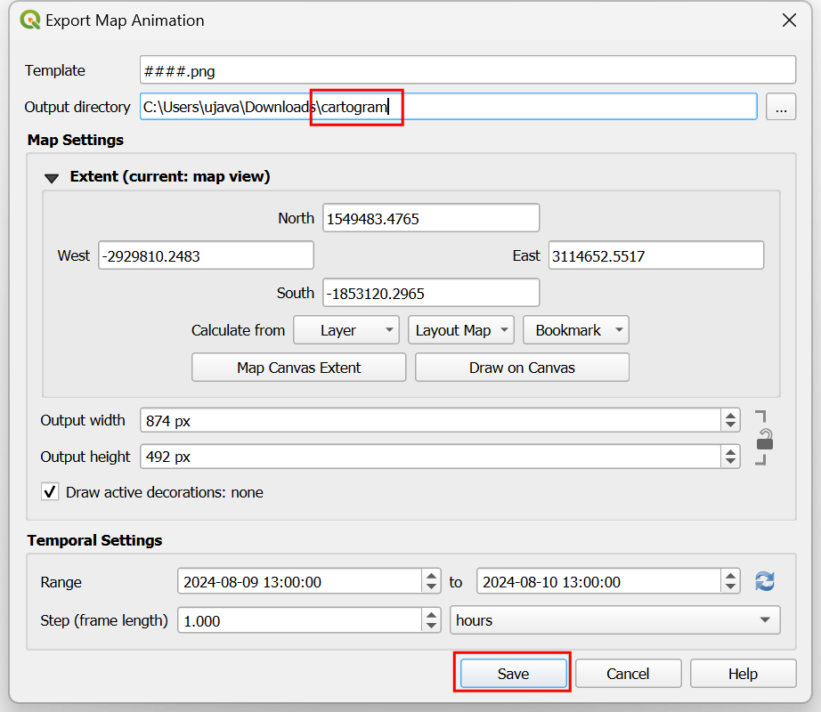
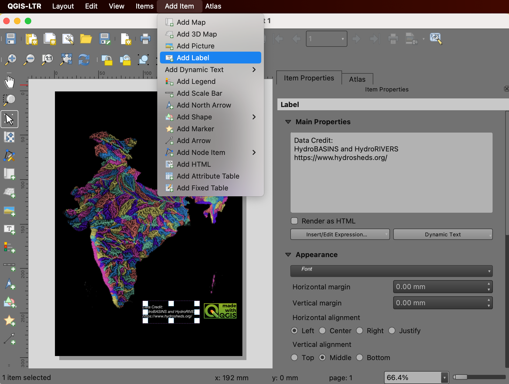

Creating a Colorized River Basin Map (QGIS3)¶
In this tutorial, we will learn the QGIS workflow to create artistic river maps for your own country or region using openly available hydrological data.
備註
This tutorial is inspired by the beautiful maps produced by Grasshopper Geography. I own one of their prints and you too can support their work by purchasing one of their maps from their online store.
Overview of the task¶
In this tutorial, we will take data layers of basins and rivers from HydroSHEDS and create a basin map for rivers of India.

Other skills you will learn¶
How to assign projection to a vector layer with incorrect or missing projection.
How to add multiple layers in a single GeoPackage.
How to add a 『Made with QGIS』 badge to your map.
Get the data¶
HydroSHEDS provides global hydrological datasets suitable for regional and global applications. The data layers are derived from hydrologically conditioned DEM from SRTM.
Basin Boundaries¶
HydroBasins provides polygon boundaries of basins for different continents. The boundaries are hierarchical – each basin at Level N is further subdivided into smaller basins at Level N+1. For this tutorial, we will use the Level 6 basin boundaries. You can use different level depending on your region and type of map you want to create. Visit the HydroBASINS page and download the zip file for your region.

備註
HydroSHEDS basin boundaries are derived from SRTM data which is over 20 years old at this point. The basin boundaries may not match the official basin boundaries in your region. You can substitute HydroBasins data with polygons from official sources when available.
River Network¶
HydroRIVERS provides a line shapefile representing the river network. Visit the HydroRIVERS page and download the zip file for your region of interest.

Administrative Boundary¶
We will clip the HydroSHEDS data to the boundary of your chosen region. In this tutorial, we want to create a river basin map of India, so we will get the boundary shapefile from Survey of India. Visit the Outline Maps of India page and download the India International Boundary Vector Format. If you need admin boundaries for other countries or states, you can get them from GADM or geoBoundaries.

Once all the files are downloaded, unzip them and copy them to a folder. You should now have 3 shapefiles: hybas_as_lev06_v1c.shp, HydroRIVERS_v10_as.shp and admin boundaries `polymap15m_area.shp`.

Data Sources: [HYDROSHEDS], [SOI]
Procedure¶
Open QGIS and locate the downloaded files in the QGIS Browser. Drag and drop
hybas_as_lev06_v1c.shpandHydroRIVERS_v10_as.shpto the canvas.

Locate the administrative boundaries shapefile
polymap15m_area.shpand drag-and-drop it to the canvas.

The HydroSHEDS data layers have some features with invalid geometries Let’s fix them proceeding further. Open the Processing Toolbox from . Search and locate the tool. Double-click to launch it.

備註
You can review the tutorial Handling Invalid Geometries (QGIS3) to learn more about the causes and fixes for invalid geometries.
Select
hybas_as_lev06_v1cas the Input layer. Click the … button next to Fixed geometries and select Save to GeoPackage….

Browse to the location where you want to save the output data and enter the name
data.gpkg. Click Save. You will be prompted to enter a Layer name. Enterbasins_fixed. Click OK. Next click Run to run the algorithm and generate the output layer.

Repeat the step for the
HydroRIVERS_v10_aslayer. Select the same GeoPackagedata.gpkgthat was created in the previous step. Do not worry if you get a message indicating that the file will be overwritten. QGIS will not overwrite the file, but append a new layer to the same GeoPackage. This time userivers_fixedas the Layer name.

The
polymap15m_arealayer comes with a projection that is not recognized by QGIS. We will assign a known projection to this layer. Search and locate the tool and double-click to open it.

備註
Remember that Assign projection tool does not reproject the layer but simply adds the correct projection information to an existing georeferenced layer with missing or incorrect projection. Use the Reproject layer tool if you want to change the CRS of a layer.
Select
polymap15m_areaas the Input layer. Click the Select CRS button and search for theEPSG:7755 - WGS 84 / India NSF LCCprojection and select it. Click the … button next to Assigned CRS and select Save to GeoPackage….

Select the same GeoPackage
data.gpkgand enter the layer nameadmin_boundary_fixed. Click Run.

You will now have 3 new layers
basins_fixed,rivers_fixedandadmin_boundary_fixedloaded to the Layers panel in QGIS. Hold the Shift key and select all remaining layers. Right-click and choose Remove Layer….

We will now clip the basins and rivers layers to the administrative boundary. Search and locate the tool from the Processing Toolbox. Double-click to open it.

Select
basins_fixedas the Input layer andadmin_boundary_fixedas the Overlay layer. Save the output to the same GeoPackagedata.gpkgas the layerbasins_clipped. Click Run.

Once the processing finishes, repeat the process with the
rivers_fixedlayer as the Input layer. Save the output to the same geopackagedata.gpkgas the layerrivers_clipped. Click Run.

You will now have 2 new layers
basins_clippedandrivers_clipped, as well asadmin_boundary_fixedlayer loaded to the Layers panel in QGIS. Hold the Shift key and select all remaining layers. Right-click and choose Remove Layer….

Before we proceed further, let’s save the project. QGIS allows you to save a project inside of a GeoPackage - making it very convenient to avoid managing additional files. Go to .

In the Save project to GeoPackage dialog, click the … button next to Connection and browse to the existing
data.gpkgfile. Enter the namerivers_basin_mapas the Project name. Click OK.

Once saved, you can expand the
data.gpkgin the Browser panel and see that the QGIS project is now saved inside the GeoPackage. Users of this GeoPackage can now open the project directly from the GeoPackage.

To create our colorized map, we need to color all the basins such that no adjacent basins have the same color. QGIS has a tool to do just that. Open the tool from the Processing Toolbox.

Select
basins_clippedas the Input layer. Leave other options to their default values. Save the output to the same GeoPackagedata.gpkgas the layerbasins_with_color. Click Run.

Once the processing finishes, a new layer
basins_with_colorwill be loaded to the Layers panel. Right-click the layer and select Open Attribute Table. You will notice that the layer has a new attribute namedcolor_idwith an integer value. Assigning a unique color to each integer value will result in topolocal coloring of the layer.

We want to transfer the color id for the basin to all the rivers contained within it. Open the tool from the Processing Toolbox.

Here we want to select
rivers_clippedas the layer to Join to features in andbasins_with_coloras the layer for By comparing to. In the Fields to add section, click the … button and select thecolor_idfield. Save the output to thedata.gpkggeopackage as the layerrivers_with_color. Click Run.

Once the processing finishes, a new layer
rivers_with_colorwill be loaded to the Layers panel. Now it is time to apply the symbology. Select theadmin_boundary_fixedlayer and click the Open Layer Styling Panel button in the Layers panel. Change the color to black.

Next, select the
rivers_with_colorlayer and select theCategorizedrenderer.

Select
color_idas the Value and click Classify. You will see the rivers in different basins will be assigned a different color.

備註
If you are not happy with the randomly chosen colors, you can click the Symbol for individual values in the list below and choose your own color.
The default lines are too thick for our map. Let’s change it. Hold the Shift key and select all the symbols in the list. Click the Symbol to open the Symbol Settings.

Click on Simple Line and change the stroke width to
0.1. The map will look much better now.

We can improve the map by assigning different widths to the rivers based on their size. The
rivers_with_colorlayer has a fieldORD_STRAcontaining the value of the Strahler Order of the river. The larger the number, the bigger the river. We will use the Assistant to help us use the value of the strahler order to an appropriate stroke width. Click the Data defined override button next to Stroke width and select Assistant….

In the Input section, select the
ORD_STRAfield as the Source with Values from1to to6. In the Output section, choose Size from as0.05and to as0.2. The map will update dynamically as you enter the values. You may have to adjust these values depending on your region. Once you are happy with the map, click the Back button.

You will notice that the Data defined override button for Stroke width is now yellow, indicating an active override has been applied to this setting.

Our colorized river basin map is now ready. Let’s put this map in a layout so we can export a high-resolution version with other map elements. Go to . When prompted to enter a name, leave it blank and click OK.

In the Layout 1 window, right-click on the blank canvas and choose Page Properties….

Choose
A4as the Size. Change the Background color to black.

Go to .

Hold the left mouse button and select a region on the canvas where you want the map to be placed.

Once the map appears, scroll down in the Item Properties tab and turn off the Background.

備註
If you do not see the Item Properties tab or close it by accident, you can get it back by going to in the Layout menu.
Let’s adjust the map extents. Click on the Interactively Edit Map Extent button and then use the mouse to pan the map. You can also use your scroll wheel to adjust the zoom. If you want more finer control on the Zoom, adjust the Scale value manually. Repeat till you are happy with the map placement.

Next we will add a QGIS logo to the map. Go to .

Draw a rectangle where you want to place the logo. In the Item Properties dialog, locate the logos icon group. Select the
Made with QGISlogo.

Next, we will add a label with data credits. Go to . Enter the text for data credits and adjust the font and label alignment.

Once you are ready to export the results, go to . Browse to a folder on your computer where you want to save the PNG image and enter the name
river_basins.png.

Choose
300 dpias the Export resolution and click Save.

Once the export finishes, you will have your final map image at the chosen location.

Here’s the final PNG image that we created using QGIS and open datasets.

If you want to give feedback or share your experience with this tutorial, please comment below. (requires GitHub account)